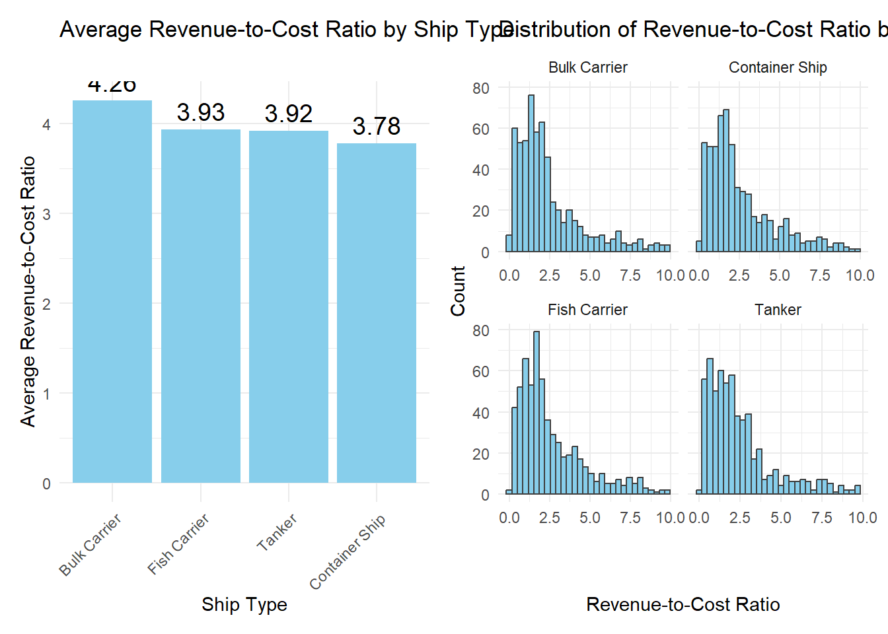
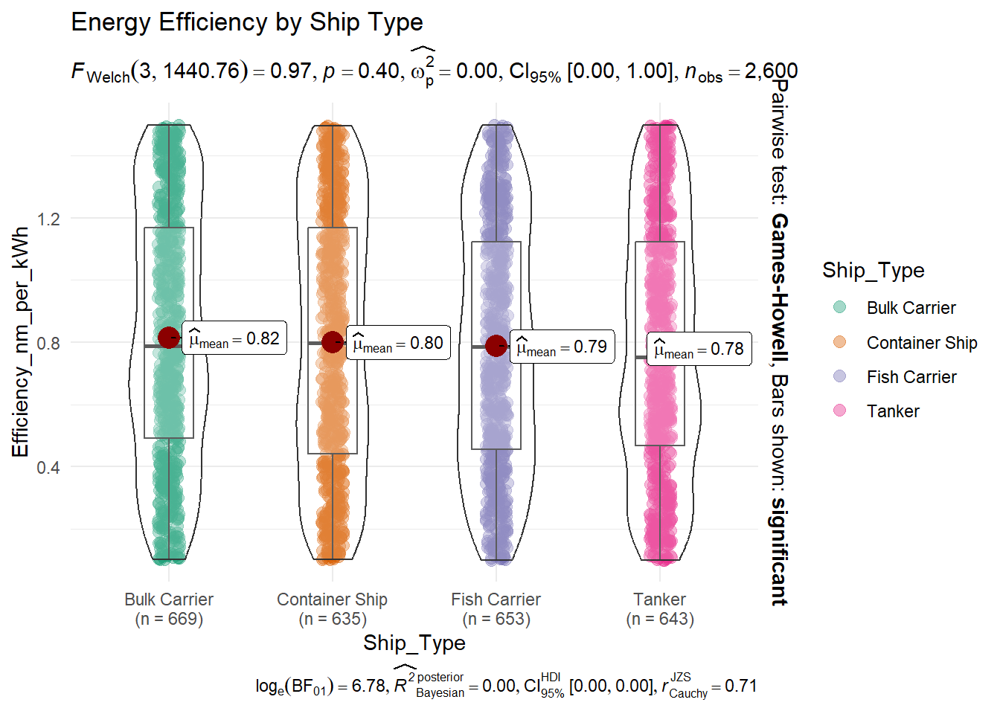
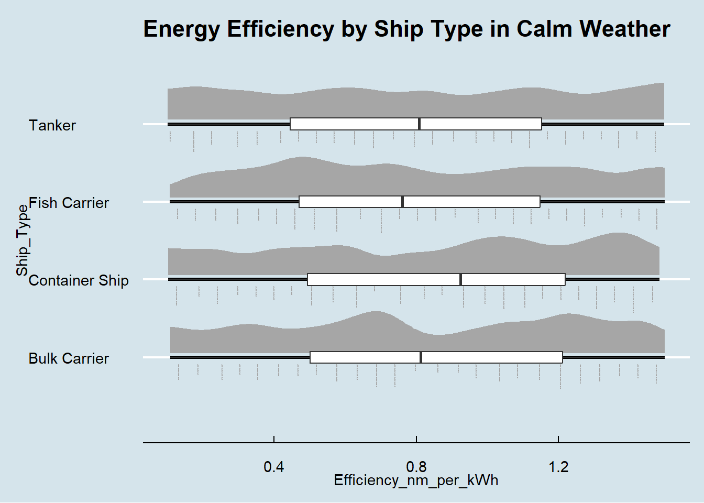

pacman::p_load(tidyverse, ggridges, ggdist,
patchwork, ggthemes, ggstatsplot, corrplot)Take-home Exercise 1: Creating data visualisation beyond default - Ship Performance in the Gulf of Guinea
1 Overview
1.1 Setting the scene
According to the Center for Strategic and International Studies, the Gulf of Guinea is one of the strategic maritime regions in the world, accounting for 25% of Africa’s maritime traffic and serving as a crucial shipping zone for oil, gas, and goods to and from central and southern Africa. The region is rich in mineral oil, gas, and fishery resources, making it a key driver of economic activity and energy security for multiple nations. On any given day, around 1,500 fishing vessels, tankers, and cargo ships navigate its waters.
Effective ship performance management is crucial for ensuring operational efficiency, cost control, and environmental sustainability in this strategic area. Optimizing fuel efficiency not only reduces expenses but also minimizes emissions, helping vessels comply with environmental regulations. Regular maintenance can enhance ship reliability, but also need to balance with the cost of maintenance. Last but not least, understanding revenue and cost factors allows ship operators to make informed decisions that maximize profitability.
1.2 Objectives
This take-home exercise aims to use appropriate Exploratory Data Analysis (EDA) techniques and visualization methods to provide readers with an overview of ship performance in the Gulf of Guinea, with a focus on the below areas:
Examine the profitability of different ship type and engine type combination through Revenue to Cost Ratio
Understand factors affecting ship energy efficiency: Ship Type, Maintenance status and Weather condition
1.3 The Data
For the purpose of this analysis, the dataset Ship Performance Clustering will be used, which is a simulated but realistic dataset that captures essential operational metrics and characteristics of different ship types in the Gulf of Guinea.
The dataset was downloaded from Kaggle and stored in data folder under the same folder path with this Quarto document.
2 Set up R environment
For the purpose of this analysis, the following packages are installed and loaded into R environment using p_load() of pacman package.
tidyverse: A collection of R packages for data manipulation, visualization, and analysis using a consistent syntax.
ggridges: Provides ridge plots (joy plots) for visualizing distributions with density estimates.
ggdist: Enhances uncertainty visualization with raincloud plots, eye plots, and other statistical graphics.
patchwork: Simplifies combining multiple ggplot2 plots into a single layout.
ggthemes: Offers additional themes and color palettes to improve ggplot2 visualizations.
ggstatsplot: Enables statistical analysis and visualization with annotated plots in ggplot2.
corrplot: Creates visually appealing correlation matrices with various customization options.
3 Data Wrangling
3.1 Import Data
The below code chunk uses read_csv() to read in Ship_Performance_Dataset.csv as downloaded from Kaggle and saves under ship_raw tibble dataframe.
ship_raw = read_csv("data/Ship_Performance_Dataset.csv")Next we use glimpse() function to have an overview of the attributes available in ship_raw.
glimpse(ship_raw)Rows: 2,736
Columns: 18
$ Date <date> 2023-06-04, 2023-06-11, 2023-06-18, 2023-06-2…
$ Ship_Type <chr> "Container Ship", "Fish Carrier", "Container S…
$ Route_Type <chr> "None", "Short-haul", "Long-haul", "Transocean…
$ Engine_Type <chr> "Heavy Fuel Oil (HFO)", "Steam Turbine", "Dies…
$ Maintenance_Status <chr> "Critical", "Good", "Fair", "Fair", "Fair", "F…
$ Speed_Over_Ground_knots <dbl> 12.59756, 10.38758, 20.74975, 21.05510, 13.742…
$ Engine_Power_kW <dbl> 2062.9840, 1796.0574, 1648.5567, 915.2618, 108…
$ Distance_Traveled_nm <dbl> 1030.9436, 1060.4864, 658.8741, 1126.8225, 144…
$ Draft_meters <dbl> 14.132284, 14.653083, 7.199261, 11.789063, 9.7…
$ Weather_Condition <chr> "Moderate", "Rough", "Moderate", "Moderate", "…
$ Cargo_Weight_tons <dbl> 1959.0179, 162.3947, 178.0409, 1737.3853, 260.…
$ Operational_Cost_USD <dbl> 483832.35, 483388.00, 448543.40, 261349.61, 28…
$ Revenue_per_Voyage_USD <dbl> 292183.27, 883765.79, 394018.75, 87551.38, 676…
$ Turnaround_Time_hours <dbl> 25.86708, 63.24820, 49.41815, 22.40911, 64.158…
$ Efficiency_nm_per_kWh <dbl> 1.4551789, 0.2903614, 0.4995945, 0.7029057, 1.…
$ Seasonal_Impact_Score <dbl> 1.4156533, 0.8856478, 1.4058132, 1.3707043, 0.…
$ Weekly_Voyage_Count <dbl> 1, 6, 9, 1, 8, 7, 3, 6, 8, 2, 9, 4, 3, 7, 7, 3…
$ Average_Load_Percentage <dbl> 93.76925, 93.89537, 96.21824, 66.19370, 80.008…The output shows there are 18 columns in the dataframe, including:
Categorical features:
Ship_Type: Type of ship.
Route_Type: Shipping route type.
Engine_Type: Type of engine.
Maintenance_Status: Maintenance condition of the ship.
Weather_Condition: Weather conditions during voyages.
Numerical features:
Speed_Over_Ground_knots: The ship’s average speed over water, measured in knots.
Engine_Power_kW: The engine’s power output in kilowatts.
Distance_Traveled_nm: The total distance covered by the ship in nautical miles.
Operational_Cost_USD: The overall operational expense per voyage in USD.
Revenue_per_Voyage_USD: The income generated per voyage in USD.
Efficiency_nm_per_kWh: The ship’s energy efficiency, expressed as nautical miles per kilowatt-hour.
Next we check if the dataframe contains any duplicated record using anyDuplicated() function of base R.
anyDuplicated(ship_raw)[1] 0The below code chunk counts the number of NA values in each column using:
is.na(): return TRUE if value is NA, FALSE otherwisecolSums(): sum across each column
colSums(is.na(ship_raw)) Date Ship_Type Route_Type
0 0 0
Engine_Type Maintenance_Status Speed_Over_Ground_knots
0 0 0
Engine_Power_kW Distance_Traveled_nm Draft_meters
0 0 0
Weather_Condition Cargo_Weight_tons Operational_Cost_USD
0 0 0
Revenue_per_Voyage_USD Turnaround_Time_hours Efficiency_nm_per_kWh
0 0 0
Seasonal_Impact_Score Weekly_Voyage_Count Average_Load_Percentage
0 0 0 The ouput reveals there are no missing values. Taking a closer look, we notice there are “None” values instead in some of the columns. The below code chunk returns the number of “None” values in each column for columns where the count is larger than 0 using summarise() and keep() functions.
none_counts <- ship_raw %>%
summarise(across(c(2:18), ~sum(. == "None", na.rm = TRUE))) %>%
keep(~ . > 0)
none_counts# A tibble: 1 × 5
Ship_Type Route_Type Engine_Type Maintenance_Status Weather_Condition
<int> <int> <int> <int> <int>
1 136 136 136 136 136The result shows there are 136 “None” values in 5 categorical columns: Ship_Type, Route_Type, Engine_Type, Maintenance_Status and Weather_Condition. We will exclude these records for relevant visualizations that use any of these columns.
The below code chunk creates 2 additional columns from the current dataframe and saves under a new dataframe ship using mutate() function:
rev_to_cost_ratio: calculate the Revenue to cost ratio to allow for fair comparison of profitability across different ships.
ship_engine_type: provide ship type and engine type tagging for different ship type and engine type combinations.
ship <- ship_raw |>
mutate(rev_to_cost_ratio = Revenue_per_Voyage_USD/ Operational_Cost_USD) |>
mutate(ship_engine_type = paste(Ship_Type, Engine_Type, sep = "_"))3.2 Bivariate Analysis
As the dataset contains multiple numerical features, a correlation matrix a correlation matrix provides a quick overview of potential significant relationships between variable pairs, helping identify areas for deeper analysis in the following section.
The below code chunk first uses cor() function to calculate the correlation matrix of numerical variables and save the result to ship.cor. Next corrplot() is used to plot the corrgram of ship.cor using method = "number" (to show the correlation coefficients) and type = "lower" (to display only the lower half of the plot)
ship.cor = cor(ship[,c(6:8,11:17)])
corrplot(ship.cor,
method = "number",
type="lower")The corrgram above indicates no significant correlations among the numerical features, as the displayed values are close to zero and shown in white.
Given this observation, we will not proceed with further visual analysis of numerical feature pairs in the next section, as it is unlikely that any meaningful relationships can be identified.
4 Analytical Visualization
4.1 Profitability by Ship and Engine Type
4.1.1 Profitability by Ship Type
First we look at the Revenue to Cost Ratio distribution by Ship Type as a profitability indicator to understand if there is any significant difference among the Ship types.
The below code chunk uses multiple functions to create a combined plot of Average Revenue to Cost Ratio and distribution by Ship type:
ggplot(): initialize the ggplot object, declare the input data frameship(usingfilter()to exclude Ship Type = “None” and rev_to_cost_ratio larger than 10)geom_col(): plot column chart of average revenue to cost ratiogeom_histogram(): plot histograms of revenue to cost ratio distribution by Ship typegeom_text,labs(),theme_minimal(),theme(): define the aesthetics of the plotpatchwork: using
+sign to join the column and histogram charts following a two columns layout.
# Calculate average revenue-to-cost ratio by Ship_Type
avg_rev_to_cost <- ship %>%
filter(Ship_Type != "None") |>
group_by(Ship_Type) %>%
summarise(avg_ratio = mean(rev_to_cost_ratio, na.rm = TRUE))
# Create column chart
p1 = ggplot(avg_rev_to_cost, aes(x = reorder(Ship_Type, -avg_ratio), y = avg_ratio)) +
geom_col(show.legend = FALSE, fill = "skyblue") +
geom_text(aes(label = round(avg_ratio, 2)), vjust = -0.5, size = 5) +
labs(title = "Average Revenue-to-Cost Ratio by Ship Type",
x = "Ship Type",
y = "Average Revenue-to-Cost Ratio") +
theme_minimal() +
theme(axis.text.x = element_text(angle = 45, hjust = 1))# Create histogram chart
p2 = ggplot(filter(ship, Ship_Type != "None", rev_to_cost_ratio <= 10),
aes(x = rev_to_cost_ratio)) +
geom_histogram(bins = 30, color="grey25",fill = "skyblue") +
facet_wrap(~ Ship_Type, scales = "free_x") +
labs(title = "Distribution of Revenue-to-Cost Ratio by Ship Type",
x = "Revenue-to-Cost Ratio",
y = "Count") +
theme_minimal() +
theme(legend.position = "none")p1 + p2
Key Observations
The column chart reveals minimal differences in the average revenue-to-cost ratio across ship types. Bulk Carriers have the highest average ratio at 4.26, while Container Ships have the lowest at 3.78.
Examining the distribution of revenue-to-cost ratios for each ship type, the histograms indicate that all ship types exhibit right-skewed distributions. Approximately 75% of ships across all types have a ratio below 5, highlighting that exceptionally high profitability is relatively uncommon.
Tankers and Container Ships display a wider spread, suggesting greater variability in profitability. In contrast, Bulk Carriers and Fish Carriers show a more compact distribution, particularly in the ratio range below 2.5, indicating more consistent financial performance.
Notably, all ship types have some instances where the revenue-to-cost ratio exceeds 7.5, suggesting that a small subset of ships operates with significantly higher profitability. Further investigation is needed to identify the factors driving these outliers.
4.1.2 Profitability by Ship and Engine Type
The below code chunk plot ridgeline plots of Revenue to Cost Ratios by Ship and engine type using the below functions:
ggplot(): initialize the ggplot object, declare the input data frameship(usingfilter()to exclude Ship Type = “None” or Engine Type = “None”), and fill color by quantile usingstat(quantile)stat_density_ridges(): plot ridgeline plot with gradient filled colorscale_fill_viridis_d(): define the colour maps to be used for rigdeline plotggtitle(): define main title, subtitle or caption for the plottheme_ridges(): a specially designed theme to make ridgeline plot looks betterfacet_wrap(): arrange the plots into separate grid by Ship type
ggplot(filter(ship, Engine_Type != "None", Ship_Type != "None"),
aes(x = rev_to_cost_ratio,
y = ship_engine_type,
fill = factor(stat(quantile)))) +
stat_density_ridges(
geom = "density_ridges_gradient",
calc_ecdf = TRUE,
quantiles = 4,
quantile_lines = TRUE,
to = 15) +
scale_fill_viridis_d(name = "Quartiles", alpha = 0.8) +
scale_x_continuous(
name = "Revenue to Cost Ratio",
expand = c(0, 0)) +
scale_y_discrete(name = NULL) +
facet_wrap(~ Ship_Type, scales = "free_y")+
ggtitle("Revenue to Cost Ratio by Ship Type and Engine Type") +
theme_ridges(center_axis_labels = TRUE)Key Observations
Similar to the plots at ship types level, for all ship and engine types combination, the majority (75%) of revenue-to-cost ratios fall below 5. All distributions are right-skewed, indicating ships achieving exceptionally high profitability across all ship and engine type.
For Fish carrier and Tanker, Diesel-powered ships show a wider spread of the lower three quartiles, suggesting higher proportion of ships with high revenue to cost ratio compared to the other 2 engine types. For Bulk carrier and Container ship, Heavy Fuel Oil (HFO) ships display slightly higher revenue to cost ratios than diesel variants, especially in the third quartile.
Notably for Container ship, Steam turbine-powered shows a stronger skew towards higher revenue to cost ratio, suggesting this engine type may offer higher financial performance for Container ship, potentially due to higher fuel efficiency at certain operational loads.
4.2 Energy Efficiency Analysis by different factors
4.2.1 Efficiency by Ship & Engine Type
To assess whether energy efficiency is a key driver of profitability, we analyze its relationship with the Revenue-to-Cost Ratio. In this section, we examine ship energy efficiency, measured in nautical miles per kilowatt-hour, which enables fair comparisons across different vessels.
The below code chunk uses ggbetweenstats() function from ggstatsplot to create violin plots and perform one-way ANOVA test to compare energy efficiency across ship types.
ggbetweenstats(
data = filter(ship, Ship_Type != "None"),
x = Ship_Type,
y = Efficiency_nm_per_kWh,
type = "p",
mean.ci = TRUE,
pairwise.comparisons = TRUE,
pairwise.display = "s",
p.adjust.method = "fdr",
messages = FALSE) +
ggtitle("Energy Efficiency by Ship Type") +
theme_minimal()
Key Observations
The violin and box plots reveal that energy efficiency (measured in nautical miles per kWh) shows a relatively similar distribution across all ship types, with comparable spreads and medians. The ANOVA test result (p = 0.4) also suggests no statistically significant difference across ship types. All ship types exhibit bimodal or slightly skewed distributions, suggesting potential subcategories or operational conditions that influence efficiency.
Bulk Carriers have the highest mean efficiency (~0.82 nm/kWh), followed by Container Ships (~0.80 nm/kWh), Fish Carriers (~0.79 nm/kWh), and Tankers (~0.78 nm/kWh). However, the differences in mean efficiency are small, indicating that ship type alone is not a major determinant of efficiency. Given these observations, further analysis could explore other operational factors that may play a more critical role in ship’s energy efficiency.
We proceed to examine energy efficiency by ship and engine type.
ggplot(filter(ship, Engine_Type != "None", Ship_Type != "None"),
aes(x = Efficiency_nm_per_kWh,
y = ship_engine_type,
fill = factor(stat(quantile)))) +
stat_density_ridges(
geom = "density_ridges_gradient",
calc_ecdf = TRUE,
quantiles = 4,
quantile_lines = TRUE) +
scale_fill_viridis_d(name = "Quartiles", alpha = 0.8) +
scale_x_continuous(
name = "Energy efficiency in nm per kWh",
expand = c(0, 0)) +
scale_y_discrete(name = NULL) +
facet_wrap(~ Ship_Type, scales = "free_y")+
ggtitle("Energy Efficiency by Ship and Engine Type") +
theme_ridges(center_axis_labels = TRUE)Key Observations
Diesel engines exhibit higher energy efficiency for Fish Carriers, whereas Heavy Fuel Oil (HFO) engines show better efficiency for Container Ships and Tankers. For Bulk Carriers, Steam Turbines tend to perform better, as indicated by a higher range in the third quartile of efficiency measurements.
As the differences become more pronounced, it suggests that engine type may play a more significant role in determining a ship’s efficiency for different ship types. Further investigation could help uncover why certain engine types perform better for specific ship types, paving the way for optimization strategies to enhance overall energy efficiency.
4.2.2 Efficiency by Maintenance status
Ship maintenance and repair play a crucial role in the maritime industry, ensuring the smooth operation of the fleet with minimal disruptions. Regular maintenance can enhance operational efficiency and drives profitability by preventing unexpected failures and optimizing performance.
To analyze how maintenance status impacts energy efficiency, we use ridgeline plots to visualize the distribution of efficiency indicators across different maintenance statuses.
The below code chunk uses ggplot(), stat_density_ridges(), scale_fill_viridis_d(), scale_x_continuous() and theme_ridges() to plot ridgeline plots of energy efficiency Maintenance status, excluding records where Engine Type is “None”, Ship Type is “None” or Maintenance status is “None”. Additionally, facet_wrap() is used to arrange the plots into separate grid by Ship type.
ggplot(filter(ship, Engine_Type != "None", Ship_Type != "None",
Maintenance_Status != "None"),
aes(x = Efficiency_nm_per_kWh,
y = Maintenance_Status,
fill = factor(stat(quantile)))) +
stat_density_ridges(
geom = "density_ridges_gradient",
calc_ecdf = TRUE,
quantiles = 4,
quantile_lines = TRUE) +
scale_fill_viridis_d(name = "Quartiles", alpha = 0.8) +
scale_x_continuous(
name = "Energy efficiency in nm per kWh",
expand = c(0, 0)) +
scale_y_discrete(name = NULL) +
facet_wrap(~ Ship_Type, scales = "free_y")+
ggtitle(label = "Energy Efficiency by Maintenance Status of Different Ship Types") +
theme_ridges(center_axis_labels = TRUE)Key Observations
The plot shows that for Bulk carrier and Container ship, ships in Good maintenance status tend to have higher energy efficiency, as indicated by their distribution shifting toward higher nm per kWh values. Interestingly, for Fish carrier and Tanker, ships in Critical maintenance status tend to have higher energy efficiency, which may require further investigation to understand the root cause.
Across all Ship types, ships with Fair maintenance status consistently show the lowest energy efficiency performance. However, the ridgeline plots do not exhibit strong, consistent differences across maintenance categories, suggesting that maintenance status alone may not be a key determinant of energy efficiency in this dataset.
4.2.3 Efficiency by Weather condition
According to voyage intelligence specialist StratumFive’s CEO, Stuart Nicholls, weather conditions can impact up to 80% of a vessel’s performance. Given this significant influence, we analyze how energy efficiency varies across different ship types under three weather conditions: calm, moderate, and rough.
Raincloud plots will be used to provide a combined view on both key summary statistics and probability density. For all the following plots, the below functions will be used:
filter(): filter out records with Weather = None or Ship type = None.ggplot(): to define the input dataframe and axesstat_halfeye(): creates a visualization that includes a half-density plot and a slab intervalgeom_boxplot(): add the second geometry layer with a box plotstat_dots(): creates a half-dotplot, which resembles a histogram and visually represents the number of samples (dots) within each bincoord_flip(): rotate the raincloud plot horizontally, creating the characteristic raincloud shape.
4.2.3.1 Calm Weather
ggplot(filter(ship, Weather_Condition == "Calm", Ship_Type != "None"),
aes(x = Ship_Type,
y = Efficiency_nm_per_kWh)) +
stat_halfeye(adjust = 0.5,
justification = -0.1,
.width = 1,
point_colour = NA,
scale = 0.55) +
geom_boxplot(width = .15,
outlier.shape = NA) +
stat_dots(side = "left",
justification = 1.1,
binwidth = 0.05,
dotsize = 0.1,
) +
coord_flip() +
ggtitle("Energy Efficiency by Ship Type in Calm Weather") +
theme_economist()
Key Observations
Bulk Carriers and Container Ships tend to exhibit slightly higher energy efficiency in calm weather compared to Fish Carriers and Tankers. Among them, Container Ships show the highest median efficiency, suggesting they perform the best under calm conditions. For the remaining ship types, the median efficiency remains fairly similar, indicating that weather alone may not be a major differentiator in efficiency under calm weather condition.
The density distributions (clouds above the box plots) reveal that most ships operate within a similar efficiency range, but Bulk Carriers and Container Ships have a higher concentration of outliers on the upper end, suggesting that some vessels achieve exceptionally high efficiency. Conversely, outliers on the lower end are present across all ship types, indicating that certain ships struggle with efficiency even in calm weather, warranting further investigation into maintenance, operational factors, or design inefficiencies.
4.2.3.2 Moderate Weather
ggplot(filter(ship, Weather_Condition == "Moderate", Ship_Type != "None"),
aes(x = Ship_Type,
y = Efficiency_nm_per_kWh)) +
stat_halfeye(adjust = 0.5,
justification = -0.1,
.width = 1,
point_colour = NA,
scale = 0.55) +
geom_boxplot(width = .15,
outlier.shape = NA) +
stat_dots(side = "left",
justification = 1.1,
binwidth = 0.05,
dotsize = 0.1,
) +
coord_flip() +
ggtitle("Energy Efficiency by Ship Type in Moderate Weather") +
theme_economist()Key Observations
The overall shape of the density distributions remains similar to that in calm weather, indicating that moderate weather does not drastically alter ship efficiency. However, the broader spread suggests that moderate weather introduces additional operational challenges, leading to greater variability in performance across ship types.
The median energy efficiency values are more comparable across ship types than in calm weather. Interestingly, Container Ships, which had the highest median efficiency in calm conditions, now have the lowest median in moderate weather, suggesting they may be more affected by changing conditions. Tankers and Fish Carriers exhibit the narrowest interquartile range (IQR), indicating that their efficiency remains more stable in moderate weather. Conversely, Bulk Carriers and Container Ships show higher variation, with distributions extending towards both lower and higher efficiency values, suggesting that external factors from weather condition impact their performance more significantly than other ship types.
4.2.3.3 Rough Weather
ggplot(filter(ship, Weather_Condition == "Rough", Ship_Type != "None"),
aes(x = Ship_Type,
y = Efficiency_nm_per_kWh)) +
stat_halfeye(adjust = 0.5,
justification = -0.1,
.width = 1,
point_colour = NA,
scale = 0.55) +
geom_boxplot(width = .15,
outlier.shape = NA) +
stat_dots(side = "left",
justification = 1.1,
binwidth = 0.05,
dotsize = 0.1,
) +
coord_flip() +
ggtitle("Energy Efficiency by Ship Type in Rough Weather") +
theme_economist()Key Observations
Compared to moderate weather conditions, the interquartile range (IQR) has further widened across all ship types except for Bulk carrier, indicating increased variability in efficiency especially for Container Ships.
The right tails of the distributions remain prominent, showing that some ships still achieve high efficiency, but the density at extremely low values has also increased, suggesting that certain vessels experience a significant drop in efficiency due to weather-induced resistance. The median efficiency for Tankers has shifted downward significantly compared to moderate weather, indicating that rough conditions have a particularly strong negative impact on their energy efficiency.
5 Conclusion
The visual analysis reveals that Bulk Carriers have the highest average Revenue to cost ratio, with engine type playing an important role in revenue-to-cost ratio variations. While ship type alone does not significantly impact energy efficiency, engine type introduces noticeable differences, particularly for Bulk Carriers, Container Ships, and Fish Carriers.
Weather conditions further influence efficiency variability, with moderate and rough weather amplifying fluctuations. Container Ships are the most affected by changing conditions, while Tankers experience significant efficiency declines in rough weather. Given these insights, further investigation into engine selection, maintenance strategies, and ship design is essential to optimize both profitability and energy efficiency under varying operational conditions.